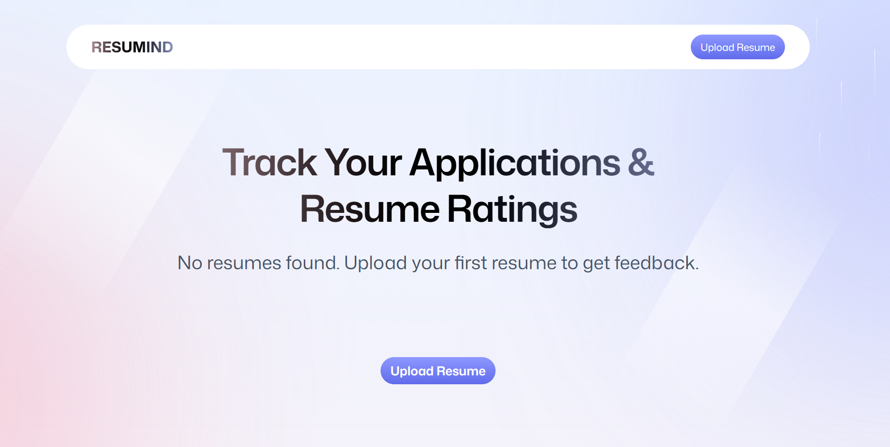
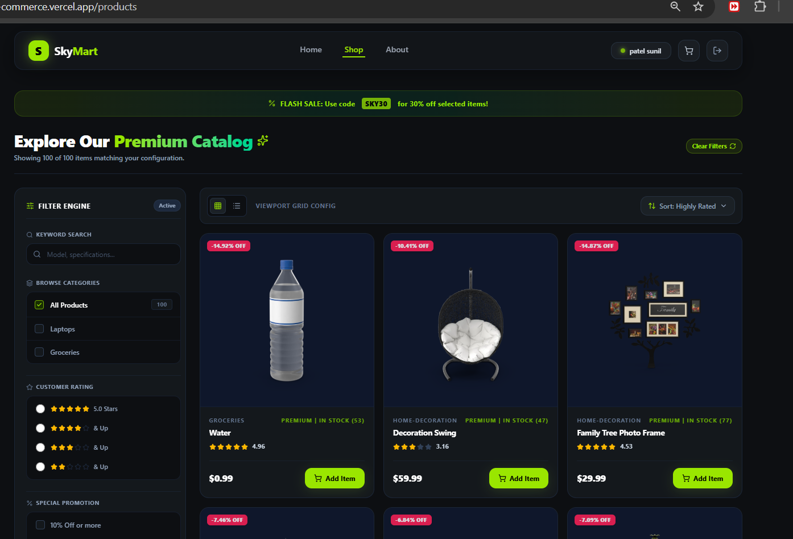
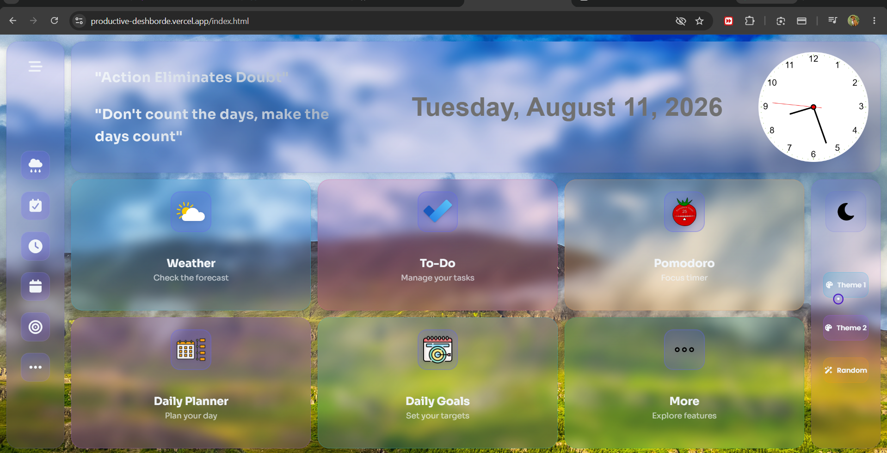
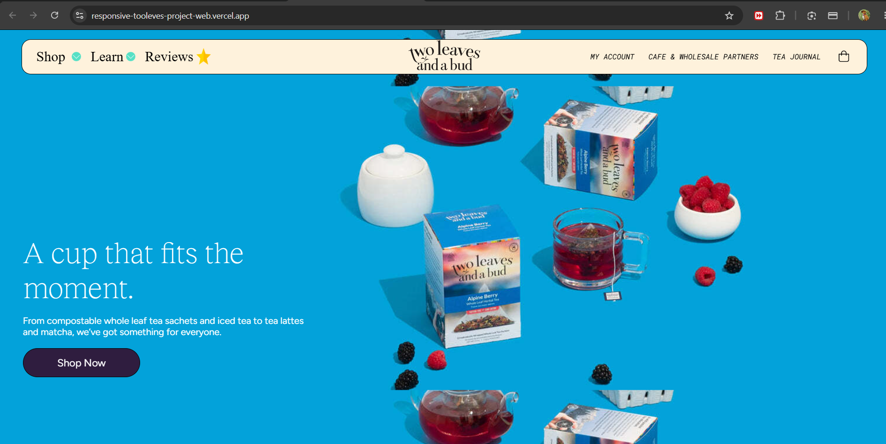

01React · TypeScript · Puter.js · Vite
↗AI Resume Analyzer
AI-powered resume feedback that helps people understand strengths, improve content and apply with confidence.

Hi, I'm Sunil, learning software engineering
Accessible React interfaces with thoughtful states, responsive layouts and strong performance.
Learning to connect reusable components, clear APIs and maintainable code through practice projects.
Exploring frontend polish, backend logic, databases and deployment one project at a time.
01 · About me
I’m Sunil Patel, a student full-stack developer focused on learning how to build scalable, high-performance web applications.
I’m currently learning software engineering at Sheryians Coding School as part of Cohort 3.0. I’m practising backend systems, secure and efficient APIs, and responsive, intuitive frontends while turning ideas into reliable products.
02 · Selected projects
Projects from my learning journey — each one helps me practise real-world frontend and full-stack development.

01React · TypeScript · Puter.js · Vite
↗AI-powered resume feedback that helps people understand strengths, improve content and apply with confidence.

02React · Vite · E-commerce
↗A responsive shopping experience built with reusable components, clear navigation and a product-first interface.

03HTML · CSS · JavaScript
↗An interactive productivity workspace with dynamic UI states, responsive layout and focused daily workflows.

04HTML · CSS · JavaScript · Motion
↗A visual recreation focused on accurate layout, smooth motion, responsive behavior and polished interaction details.
03 · Engineering toolkit
A practical stack for turning rough ideas into fast, maintainable products, with growing depth in GenAI, system design and DevOps.
Interfaces that are responsive, accessible and pleasant to use.
Clear APIs and server-side logic designed for real users.
Structured data models with queries that stay understandable.
Small feedback loops that make releases safer and faster.
Building practical AI-assisted experiences with a focus on useful, reliable outputs.
Learning to shape clear, scalable systems from requirements to dependable APIs.
Automating repeatable delivery and learning the foundations of cloud operations.
Practising safer APIs and clearer signals for understanding how systems behave.
07 · Engineering approach
The principles I’m practising while learning to turn ideas into clear, useful and reliable software.
Before pixels, I ask what has to change for the business and the user. A clear outcome makes every design decision easier to judge.
Rule in practiceEvery brief opens with one line: what moves if this works.
I hire curious people, then help each one own a craft. Teams grow when the people in them grow.
Rule in practiceEach designer has a growth plan we write together and revisit every quarter.
Quality shouldn't depend on who's in the room. Shared systems, review rituals and clear standards make good work repeatable.
Rule in practiceThe design system comes first, then review gates before anything ships.
Prototypes settle debates faster than decks. They travel across languages, time zones and teams.
Rule in practiceIf we're arguing, we're prototyping.
AI drafts flows, explores variants, summarises research and turns components into working code. That frees the team for the problems that need people.
Rule in practiceOur AI tools draft from our design system, never from a blank page.
AI widens the options, and people choose. Judgment, ethics and craft stay with the team.
Rule in practiceNothing ships without a designer's review.
04 · Professional path
The milestones that shaped how I think, code and solve problems.
JUN 2025 – MAY 2029
Gujarat Technological University
Currently pursuing a strong foundation in software, systems and problem solving.
CURRENT · COHORT 3.0
Sheryians Coding School
Currently learning full-stack development through structured lessons, practice and hands-on projects.
NOW · LEARNING
Sunil Patel
Building projects to strengthen my frontend skills, explore backend tools and learn by making.
05 · Achievements
Certificates and challenges that reflect the skills I’m building beyond the classroom.
PYTHON · CERTIFICATE
Practising Python fundamentals, problem solving and programming concepts.
View certificate ↗PROBLEM SOLVING · BASIC
Verified skill certificate demonstrating foundational problem-solving ability.
Verify certificate ↗AI · LEARNING
Exploring Gemini tools and practical AI workflows for learning and building.
View certificate ↗06 · Side quests
The work that doesn't fit on a resume — games, illustrations, experiments, and the things I make for fun.
Turning lessons into small projects that make each new concept practical
Learning full-stack development with the Sheryians Coding School community
Practising responsive layouts, reusable components and accessible interfaces
Exploring new tools, solving problems and improving one project at a time
08 · Say hi
Based in Gujarat. I’m currently learning full-stack development at Sheryians Coding School as part of Cohort 3.0 and building projects with JavaScript, React and Node.js.